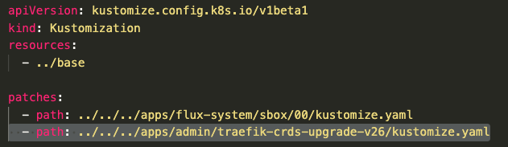
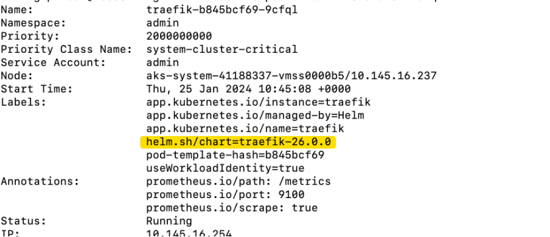

Traefik Patching Example
It is important to understand what changes are in the version upgrade, especially if there are any breaking changes.
For this example, the latest version in v26 and our existing version was v23.1.0
The traefik-helm-chart/releases page was reviewed, paying particular attention to any breaking changes.
For example: in v25 there was a change in the syntax for the use of “redirectTo”. After searching GitHub we found that we were not using this feature in our configuration so there was no impact.
Test existing configuration
In SDS, check traefik pods are running
kubectl get pods -n admin | grep traefik
Ensure toffee.sandbox.platform.hmcts.net/ is accessible.
Note: check plum.sandbox.platform.hmcts.net/ for CFT.
Updating
In order to allow patching of sbox only, a new directory was created for the updated crd URLs.
apps/admin/traefik-crds-upgrade-v26/kustomization.yaml
&
apps/admin/traefik-crds-upgrade-v26/kustomize.yaml
See example PR containing these files
This enables us to target specific enviornments at this new crd version.
We can do this by pointing the desired cluster at this new directory via a patch in the base kustomization file.
Eg:

clusters/sbox/base/kustomization.yaml
{kind=link}
With the new crds version now available, a version selector block can be added to the sbox 00 & 01 config
Example:
chart:
spec:
chart: traefik
# update the crd version in traefik-crds when updating this
version: 26.0.0
sourceRef:
kind: HelmRepository
name: traefik
namespace: admin
Update the cluster kustomization file pointing to the new crd directory created earlier - see pr below
See Example PR
Once the PR has been raised and the checks have been reviewed for errors - merge the PR.
Checks to see if upgrade worked correctly
You can start checking the flux config to make sure it hasn’t got any error and it has reconciled correctly
kubectl get kustomizations.kustomize.toolkit.fluxcd.io -n flux-system
Review cluster pods for Traefik have come back up:
kubectl get pods -n admin | grep traefik
Check pods have the correct chart version:

kubectl describe pod {pod-name} -n admin | grep helm.sh/chart=traefik
{kind=link}
Also, you can check on the Helm release to see if it has got correct version in the log
kubectl get hr -n admin
{kind=link}
Review pods for any new errors:
kubectl logs {pod-name} -n admin -f
Check test sites are accessible
Ensure toffee.sandbox.platform.hmcts.net/ is accessible.
Note: check plum.sandbox.platform.hmcts.net/ for CFT.
In sandbox, delete Toffee / Plum HRs to test
kubectl get hr -n toffee
kubectl delete hr toffee-recipe-backend -n toffee
kubectl delete hr toffee-frontend -n toffee
Ensure to monitor the status for the HRs and pods to ensure they come back successfully.
Repeat steps in CFT
Ready to move onto Non-prod environments.
AAD Pod Identity has been depricated hence there is not going to be further patches.
AAD Pod Identity already using latest version on both sds and CFT.
Prod environments.
You want to test ptl environment on its own before upgrading prod as this cluster hosts Jenkins, Start with SDS then move onto CFT.
For Prod you want to remove the previous patches you did for the other environments and just update the application yaml file see the examples below: